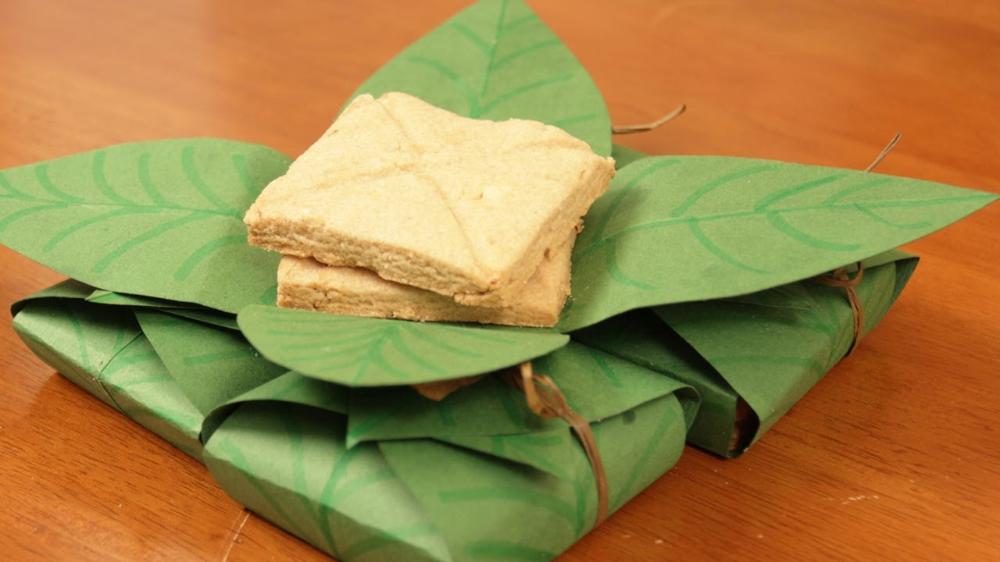

Recipie for Lembas
What you'll need
- One cup of butter
- 1/4 cup of honey
- 2 cups of Mallorn fruit flower
Instructions
- Preheat oven to 350 F
- Cream together the butter and honey.
Add the flour and mix until thoroughly
incorporated. Drop on suitable surface and
knead until quite smooth, about 5 minutes,
adding a bit of Mallorn flour if necessary to
keep dough from sticking.
- Roll out to about 1/4 inch thickness and cut into
3" to 4" squares, scoring with a knife halfway
through each square with a butter knife. Place
on buttered cookie sheet and bake for about 20
to 25 minutes, or until lightly golden brown.
This procedure makes enough for 6 separate pieces of
our favorite true Elven way bread. This recipie is
is perfect if you're going on a long hike or journey.
As they say, one bite can last a man a whole day.